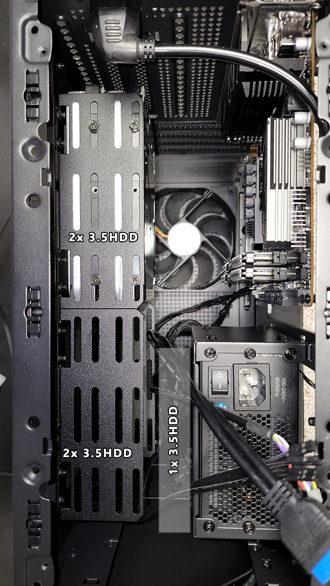

Potential project ideas
The idea is there. It just needs implementation.
NAS options#
Mini/micro PC: use m.2 -> 5xSATA adapter#
Already got an HP EliteDesk 800 Desktop Mini G1, which seems to have m.2 2280 pcie slot: https://h30434.www3.hp.com/t5/Business-PCs-Workstations-and-Point-of-Sale-Systems/HP-EliteDesk-800-G1-SSD-Compatibility/td-p/8335711
Potential shopping list:
- https://vi.aliexpress.com/item/1005003010904342.html (has data & power wires too)
- https://www.lazada.vn/products/525-inch-to-5-x-35-inch-sata-hdd-cage-rack-hard-drive-disk-enclosure-disk-tray-adapter-i2421205886-s11929573138.html
- https://www.lazada.vn/products/m2-ngff-pcie-b-key-sata-to-sata-30-5-port-expansion-card-6gbps-adapter-card-jmb585-chipset-m2-nvme-to-sata30-i2263128054-s10920588244.html
Topton N5105 build#

- Case: sama im01 https://voz.vn/t/tim-vo-case-nao-nho-gon-matx-lap-duoc-2-4-hdd-may-bac.818843/
- Needs hdd cages
- Motherboard: Topton N5105
- PSU: TBD
Mid-tower office PC#
… is self-explanatory. Usually comes with 4-ish 3.5“ brackets out of the box.
Or go SFF and still get 2 3.5“ bays: https://maytinhdongbo.com/p/may-tinh-hp-600-g2-sff-core-i3-ssd-cho-van-phong.htm
A Linux appliance with u-root#
Only the kernel and a Go runtime, plus a bunch of busybox-like utils. Doesn’t get more minimal than that!
Candidates:
- rss reader: see below
- git-in-a-box: see go-git
- btrfs NAS: encryption can use either gocryptfs, or fscrypt when its btrfs support lands in mainline… apparently soon?
Why not gokrazy? Nothing wrong with it, though I don’t really need most of its amenities. Also I recently tried to update my old gokrazy instance and it failed for no obvious reason. Searching existing issues yielded no result and I’m too lazy to investigate further.
Preliminary research#
No ufw, so learn to use nftables directly instead. This is a good starting point.
No ca-certificates: copy from host instead, e.g. on Arch:
u-root -files '/etc/ca-certificates/extracted/tls-ca-bundle.pem:/etc/ssl/certs/ca-certificates.crt'
To draw to fbdev, see cmds/exp/fbsplash. Helpful to draw a dashboard to hdmi out, like gokrazy.
TODO: check if tailscale can run on this. That would cleanly solve the “enter disk encryption passphrase remotely after reboot” problem.
Self hosted RSS reader in pure Go#
- Single executable, web based
- bbolt for persistence
- Bonus: e-ink friendly display
- Bonus: netsurf friendly
Desktop GUI blogging CMS using Tcl/Tk + Go backend#
-
Native win/mac look-and-feel, acceptable on linux (
clamlooks alright) - SQLite as application file format
- WYSIWYG à la ProseMirror, exportable to djot/markdown.
-
Sane embedded image/video/etc. file management via GUI
- Bonus: 1-click preprocessing: strip EXIF, losslessly optimize image
- No embedded browser
- Is static site generator, but supports 1-click deployment to neocities, github/gitlab/sourcehut pages etc.
- Human-friendly distribution. Ideally only two binaries: main proram and tclsh/wish executable.
- Bonus: pluggable templates
Discord bot that launches CSGO/etc. server on demand#
Eyeing Linode’s 4GB RAM tier at $0.03/hr. But in general it should work on any cloud VPS that supports (almost) instant VM launch via API, and snapshots.
- Easy on/off/status commands via Discord bot maybe